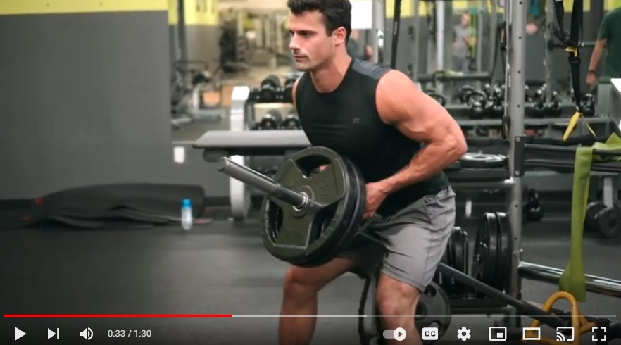

- Superman

Click on Image for video
Lie on your stomach and slowly, lift both your arms and legs simultaneously, as much as possible. Hold
this position for as long as you comfortably can and keep looking straight ahead.
- Aquaman

For this variation of Superman, first lift your right arm and the left leg as much as you can. And when
you bring the two down, lift your left arm and your right leg. Do both these movements as fast as
possible.
- Bhujangasana or the Cobra Pose

Lying in the prone position, place your palms at shoulder level and tightening your stomach, lift you
upper body in a stretch with your eyes facing upwards. Make sure to keep your chest lifted and avoid
arching your back.
- Squats

For those who didn't know, since squats isometrically use both the lower and upper back, they're a great
workout to strengthen your spine too. Moving the hips back, bend the knees and hips to lower the torso
and after pausing for a couple of seconds, return to the upright position.
- Setu Bandhasana or the Bridge Pose

Lying on the floor, bend your knees and place your feet on the floor. Next, sucking in your stomach,
lift your pelvis and buttocks as high as possible as you try and grab the back of your feet with your
hands.
- Cat Stretch
Come down on all fours and take a deep breath. As you exhale, push your belly towards your spine,
curving your back to the ceiling. Hold this position for a few seconds and then, slowly bring your back
down to normal.
- Kneeling Extension
Get your body on all fours and left your right leg and left arm to shoulder level. Hold this position
for a few seconds while looking straight ahead. Then, bring the leg and arm down and lift the left leg
and right arm next.
- Plank
Since it requires you to tighten your core, the plank is a great way to strengthen your back, especially
the lower part of it. Depending on your fitness level, either do the forearm version or the classic one
and make sure to look straight ahead for extra effect.
- Dolphin Kicks
Place your torso on a table or bench as you lie on your stomach and slowly, lift both your legs together
in the air as high as you can. If lifting both the legs together is particularly tough, do it one leg at
a time.
- Adho Mukha Svanasana or the Downward Dog Pose
This is the best stretch for the lower back ever! Begin in a kneeling position with your hands directly
under the shoulders and fingers spread wide. Tuck your toes and engage your abs as you push your body up
so only your hands and feet are on the ground. Press through your hands, moving your chest gently
towards your thighs and your heels towards the floor.
- Assisted Pull-Up Machine
The assisted pull-up machine is literally designed to assist you in pulling yourself up, allowing you to
focus on mastering form and completing reps. As you get stronger, progressively decrease the amount of
assistance. Eventually you can start knocking out full pull-ups on your own.
TIP:Focus on the negative for building strength, using barely enough assistance to help you
lift
yourself back up for each repetition. Stay in the 8-10 rep range for 3-4 sets to build strength and mass
while you work on form.
- Pull-Over Machine
This machine helps you improve flexibility, get a deep stretch, and squeeze the lats hard on every rep.
TIP: Since this is an isolation exercise, use it as a finisher on your big pull-up and
deadlift
days, aiming for 4 sets of 8-12 reps to squeeze as much blood as possible into those big back muscles.
- T-Bar Row

Many trainers forget the T-bar row is technically a machine movement. There is a pivot point preventing
you from having total control of the weight, so it is not a "free" weight. Whether you shove the end of
a bar in a corner or use a landmine or a station, the T-bar row is an excellent exercise to go heavy on.
If you use the free-standing version without the pad to lean on, your lower back benefits as
well as your lats. Using a horizontal grip also targets the rhomboids, teres major, mid traps, and rear
delts.
TIP: This is a chance to go super heavy on a row, so don't be afraid to pack on the
weight and drop down to a 5x5 set-and-rep scheme to add massive weight and volume to your workout.
- Low Seated Row
The low version of the row machine allows you to use different attachments to serve different
purposes. The rope can help you pull in tighter and get a better contraction, the wide handle helps
develop the upper back, and the close-grip handle helps you focus on the lats.
The low seated row is a versatile option for targeting any back-training weakness, so let it
serve you in developing a well-balanced upper body.
TIP: Maintain your posture! It's easy to try to throw momentum into the seated row, but a
stable spine guarantees you isolate those back details. Work in that same 8-10 rep range, but keep that
extra squeeze on the contraction and slow negative to maximize all this machine has to offer.
- Back Extension Machine
If you want to work on that Christmas tree in the lower back, this is a great choice for isolating that
area. If you suffer from lower back issues, this exercise can also help you strengthen that area while
keeping you safe in a fixed line of movement.
You may not get the big muscle pump that you get from working your other major back muscles,
but the lower back is not something to be ignored. Developing this area can help you reach your physique
and performance goals.
TIP: Add lower back on your leg or chest day to help round out your core strength with
antagonist training, building up that all-important lumbar region when your other big muscles are
already gassed.
- DeadLift*
Stand in front of a loaded barbell with your feet shoulder-width apart, hips back, and back flat. The
knees should be bent slightly to allow you to grip the bar tightly slightly wider than shoulder-width.
Keeping your back flat and chest up, tighten the back muscles, and straighten the arms as you load the
pull. With everything locked, aggressively push your legs into the floor as you simultaneously pull your
chest and shoulders upwards, lifting the bar to the hip.
- Barbell Row*
Set up as you would for your deadlift by standing feet shoulder-width apart in front of a loaded
barbell. Hinge at the hips until your torso is about parallel to the floor. Grab the barbell with a grip
that’s a bit wider than your typical deadlift grip. Lean back, so your weight is on your heels, and row
the barbell, leading the pull with your elbow until it touches around your belly button.
- Chest Supported Row*
Set a workout bench to a 45-degree incline and lay face down on it so your chest and stomach are
supported. Grab a dumbbell in each hand and then row them to your sides until your elbows pass your
torso. Slowly lower the weight under control.
- Single-Arm Row*

Stand next to a bench so that it’s parallel to you. Place the same-side hand and knee on it, and firmly
plant your other foot onto the floor. Reach down with your free hand and grab a dumbbell. Keep your back
flat and your head in a neutral position. Row the dumbbell to your side until your elbow passes your
torso. Complete all of your reps on one side and then switch.
- Inverted Row*
Place a bar in a rack so that it is supported and stable. When you lay down underneath it, your hands
should just reach the bar. Adjust the height as needed. Grasp the bar firmly and set the body in a rigid
plank position. Pull your chest to the bar, making sure to keep the elbows from flaring out.